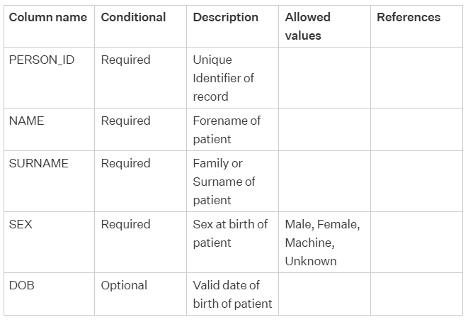
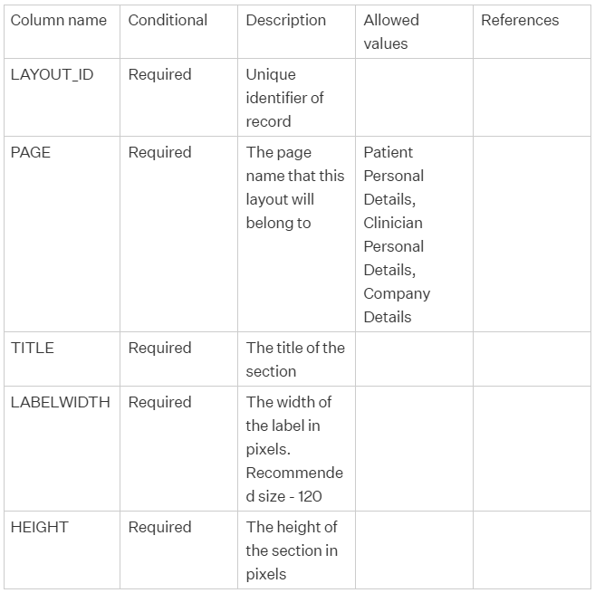
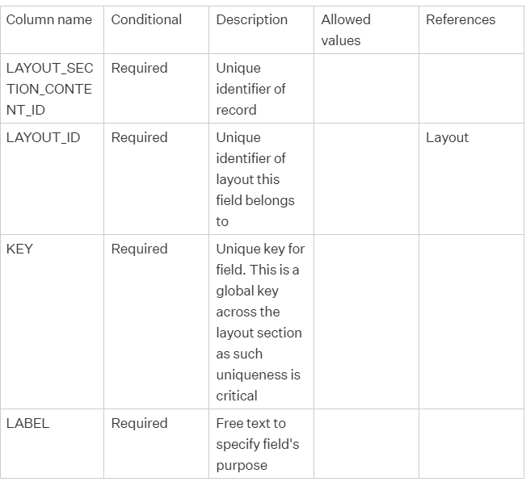
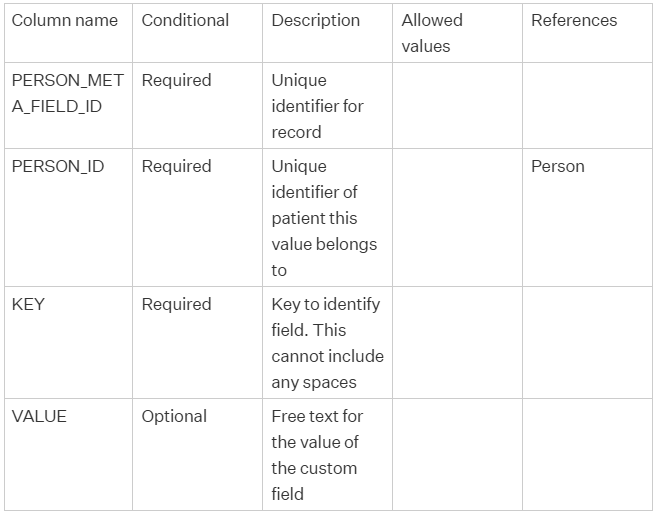

Data Imports is a built-in feature of Meddbase, allowing importing new entities or updating existing entities to/in your system in bulk. An entity in Meddbase, generally speaking, is:
As mentioned, the Data Imports tool allows creating new entities or updating existing entities in bulk, saving you the trouble of having to create or update these entities one-by-one manually.
There are strict rules and solid logic behind running a successful import.
Large data imports, given their nature and complexity, may require assistance and oversight of the MMS Imports Team. Please contact the Support Team to discuss your import requirement.
This article will guide you through the steps you will need to take to import custom fields, and it is broken down into the following steps:
It is possible to import the custom field itself at the same time as the data that will be held in that custom field, by importing multiple entities during the same import.
Custom fields can be added to any demographic page within your chamber (Patient, Company or Medical Person). This article covers importing a custom field for the patient demographic page, but the steps will be the same for any custom field import.
Any changes made to a demographic page will be chamber-wide.
Creating a template for an import is useful as a starting point, where the same import will be repeated.
When running an Import from a Template, you can change/add/remove entities and the descriptions, thus completely overriding the template
To create a new template:
1. From the Start Page, click the Admin tile
2. Click the Data imports tile
3. Click New Template
4. Name the template accordingly, e.g. Patient Demographic Custom Fields
5. Click Add
6. From the dropdown menu, select:
7. For this example, we will select Existing as we intend to add the custom field for patients that already exist within your chamber.
8. Add a Description, e.g. Existing Patients
9. Click Add again and select:
10. Add a Description, e.g. Layout Section
11. Click Add again and select:
12. Add a Description, e.g. Layout Section Field
13. Click Add again and select:
14. Add a Description, e.g. Custom Field
15. Click Save Template
Once you have created an import template, you can use it to run a new instance of an import in the Data imports section:-
1. Click the Template you wish to use
2. Click +New Instance
3. Type in the Instance Description
4. Click Schema in the respective entity's row to download a .csv spreadsheet. The Schema outlines:
*Importing a piece of information in a column for an entity type may Reference another entity. This means that you will need to import another spreadsheet for that entity type following its respective Schema.
Patient schema
As per the Patient schema you must provide the following information:

Layout Section schema
As per the Layout Section schema you must provide the following information:

Layout Field Definition schema
As per the Layout Field Definition schema you must provide the following information:

Patient meta (custom) field schema
As per the Patient meta (custom) field schema you must provide the following information:

Once you have familiarised yourself with the schema(s), you can download a Template for each entity type required for the import. Templates will include all column headers*, labelled correctly** (required and optional) that were listed in the respective schema.
*It is recommended that you delete those columns from the Template where no information will be provided, so that you do not import [empty] columns.
**When uploading a spreadsheet containing information you wish to import, column headers must be labelled as per the schema, incl. upper case letters and ' _ '(underscores).
Once you have populated the templates for the entity types in your import with required and optional information as needed, you can complete the 1st stage of the import:
If the system identifies any errors in the spreadsheets you had uploaded, clicking the View Report button allows you to view the error details and take corrective action.
You can now move to the 2nd stage of the import:
1. Click Validate, and the system will check the values uploaded in the spreadsheet columns against the data type they correspond to.
2. Once Validation is successful click Next to move to the final stage of the import.
If the system identifies any errors in the spreadsheets you had uploaded, clicking the View Report button allows you to view the error details and take corrective action.
Once the validation is complete, you can move to the final stage of the import:
1. Click Commit and the system will create the new entities/update the existing entities in your system
2. Click Finished to end the import, and you will be taken back to the main Data Imports page where you can view reports from all stages of the import, download an Entity Overview spreadsheet and more.